Simulation
Description of the simulation tab and the results generated by simulations.
1 Trial States
1.1 State descriptions
For the purposes of interims, the different states or stages of a trial are:
In Burn-in / before first analysis. In adaptive allocation designs, the burn-in denotes the initial group of subjects explicitly assigned to treatment arms before probabilistic allocation begins. FACTS prevents the burn-in requiring more subjects than the maximum number of subjects – but the numbers can be equal. Regardless of the interim schedule specified (e.g., frequency, number of subjects or number of events), a) no analyses are performed during this period of time, and b) the first analysis is performed at its conclusion. In arm dropping and early stopping designs the first analysis occurs at the explicitly specified initial interim. Interims are never performed in non-adaptive designs; rather, the first and only analysis occurs when the max subject’s final observation is taken. In all cases, it is possible to reach the maximum number of events prior to the first analysis, making the study complete.
Mid Trial. Interims are performed and all rules assessed. If arms have been dropped, the per-arm posterior probabilities are still calculated for the dropped arms but the drop decision for the arms is absorbing and not re-assessed.
Fully Accrued but not complete. All subjects have been recruited and being followed up. If interims are by subject or ‘interim analysis beyond full accrual’ is set to FALSE, then the only possible next event is ‘last subject final observation’.
Stopped Early but still following up. The study stopping rules are not evaluated, but arm dropping rules are. Interims may still occur.
Complete. All possible data collected for every enrolled subject.
1.2 Analysis trigger events
The following are the events that trigger interims, stopping or changes of trial state:
Last event is observed (TTE trial with a max number of events – this is the only circumstance that can arise before the end of burn-in / first analysis that can stop the trial).
A “number of subjects interim” occurs (other than last subject of burn-in / first analysis)
A “cohort complete” interim occurs (when using cohort enrolment). A cohort complete event is slightly different from a “number of subjects interim” in that after a cohort is fully enrolled the interim does not occur until all the subjects are complete.
Study max subject size is reached.
Recruit last subject of burn-in / first analysis occurs.
A “time” or “number of events” interim occurs.
Last subject’s final observation is taken (in a TTE trial this might be that the last subject to have an event has their event, or last subject recruited reaches the end of the maximum follow-up and is censored).
1.3 Trial State Transitions
Note: the term “study arms” is used to refer to the treatment arms that are not the control or active comparator arm. In an arm dropping design only the study arms can be dropped, and the trial stops if all study arms are dropped.
| State transition table | |||||
|---|---|---|---|---|---|
|
Triggers Processed in order… |
1: In Burn-in / before first analysis [This is the starting state for adaptive allocation designs] |
2: Mid Trial [This is the starting state for arm dropping, early stopping, and non-adaptive designs] |
3: Fully Accrued but not complete |
4: Stopped Early but following up [This state can only be entered if “Continue follow-up if study stopped for success/futility is set] |
5: Complete [This is the final state] |
| A: Last event is observed [can only occur in TTE trials] |
A “final evaluation” is output. Go to “5: Complete” |
A “final evaluation” is output. Go to “5: Complete” |
A “final evaluation” is output. Go to “5: Complete” |
A “final evaluation” is output. Go to “5: Complete” |
N/A |
| B: A “number of subjects” interim occurs | N/A |
An interim is output. If arm dropping, check not yet dropped arms to see if any should be dropped and flag those that are. If stopping conditions are met or all study arms dropped then if “Continue follow-up” for the appropriate decision is selected go to “4: Stopped Early” otherwise a “final evaluation” is output and Go to “5: Complete” If the interim size = Max subjects then go to “3: Fully Accrued” Otherwise stay in “2: Mid Trial” |
N/A | N/A | N/A |
| C: A “cohort complete” interim occurs [for trials using cohort enrolment] |
[Can only occur when the final observation of a burn-in cohort is observed] An interim is output. If stopping conditions are met a “final evaluation” is output and go to “5: Complete”. Otherwise go to “2: Mid Trial”. |
An interim is output. If stopping conditions are met a “final evaluation” is output and go to “5: Complete”. If the interim size = Max cohort or the max cohort size is reached then a “final evaluation” is output and go to “5: Complete”. Otherwise stay in “2: Mid Trial” |
N/A | N/A | N/A |
| D: Study max subject size is reached |
[Can only occur if Burn-in / first interim size = Max subjects] Go to “3: Fully Accrued”. |
Go to “3: Fully Accrued” | N/A | N/A | N/A |
| E: Recruit last subject of burn-in / first analysis |
An interim is output. If arm dropping, check not yet dropped arms to see if any should be dropped and flag those that are. If stopping conditions are met or all study arms dropped then ff “Continue Follow-up if study stopped“ for the appropriate decision is set go to “4: Stopped Early but following up” otherwise a “final evaluation” is output and go to “5: Complete” Otherwise go to “2: Mid Trial” |
N/A | N/A | N/A | N/A |
| F: A “time” or “number of events” interim occurs | N/A |
An interim is output. If arm dropping, check not yet dropped arms to see if any should be dropped and flag those that are. If stopping conditions are met or all study arms dropped then ff “Continue Follow-up if study stopped“ for the appropriate decision is set go to “4: Stopped Early but following up” otherwise a “final evaluation” is output and go to “5: Complete” Otherwise stay in “2: Mid Trial” |
If “Discontinue interim analysis after full enrollment” is set, then there is no output. Stay in “3: Fully Accrued” Otherwise: An interim is output. If arm dropping, check not yet dropped arms to see if any should be dropped and flag those that are. If stopping conditions are met or all study arms dropped then ff “Continue Follow-up if study stopped“ for the appropriate decision is set go to “4: Stopped Early but following up” otherwise a “final evaluation” is output and go to “5: Complete” Otherwise stay in “3: Fully Accrued” |
If “Discontinue interim analysis after full enrollment” is set then there is no output, stay in “4: Stopped Early” Otherwise: An interim only checking arm-dropping is output. Stopping conditions not checked. If arm dropping, check not yet dropped arms to see if any should be dropped and flag those that are. If all study arms are dropped then if “Continue follow-up if arm dropped” is set stay in “4: Stopped Early” otherwise a “final evaluation” is output and go to “5: Complete” |
N/A |
| G: Last subject’s final observation is taken | N/A | N/A |
A “final evaluation” is output. Go to “5: Complete” |
A “final evaluation” is output. Go to “5: Complete” |
N/A |
2 Simulation
The Simulation tab allows the user to execute simulations for each of the scenarios specified for the study. The user may choose the number of simulations, whether to execute locally or on the Grid, and modify the random number seeds, Figure 11‑1.
N.B. Each time the FACTS application opens, the “Number of Simulations” will be set to the number of simulations last run for this design. If completed results are available, the actual number of simulations run for each scenario is reported in the ‘Num Sims’ column of the results table. The value displayed in the “Number of Simulations” control is the number of simulations that will be run if the user clicks on the ‘Simulate’ button.
Note also that if a scenario uses an external VSR file or directory of external files, the number of simulations will be rounded down to the nearest complete multiple of the number of VSR lines or external files. Unless the number of simulations requested ‘S’ is less than the number of VSR lines or external files, in which case just the first S are run. Finally note that the simulations will be performed in packets such that each packet only uses one external VSR line or file, so packet sizes may be smaller than requested.

N.B. FACTS uses Markov Chain Monte Carlo methods in the generation of simulated patient response data and trial results. In order to exactly reproduce a statistical set of results, it is necessary to start the Markov Chain from an identical “Random Seed”. The initial random seed for FACTS simulations is set from the simulation tab, the first thing that FACTS does is to draw the random number seeds to use at the start of each simulation. It is possible to re-run a specific simulation, for example to have more detailed output files generated, by specifying ‘start at simulation’.
Say the 999th simulation out of a set displayed some unusual behavior, in order to understand why, one might want to see the individual interim analyses for that simulation (the “weeks” file), the sampled subject results for that simulation (the “Subjects” files) and possibly even the MCMC samples from the analyses in that simulation. You can save the .facts file with a slightly different name (to preserve the existing simulation results), then run 1 simulation of the specific scenario, specifying that the simulations start at simulation 999 and that at least 1 weeks file, 1 subjects file and the MCMC samples file (see the “MCMC settings” dialog) are output.
Even a small change in the random seed will produce different simulation results.
The same random number seed is used at the start of the simulation of each scenario. If two identical scenarios are specified then identical simulation results will be obtained. The same may happen if scenarios or designs only differ in ways that have no impact on the trials being simulated, for instance designs that have no adaptation, or scenarios that don’t trigger any adaptation (e.g. none of the simulations stop early).
The user can specify:
The number of simulations for which ‘Weeks’ files, ‘Subjects’ files and “Frequentist Weeks” files are written.
‘Weeks’ files record the data, analysis and recommendation at each interim.
‘Subjects’ files record the subject responses simulated for the trial.
If Frequentist analysis has been enabled, then “Frequentist Weeks” files record the results of the frequentist analysis at each interim.
The parallelization packet size, this allows simulation jobs to be split into runs of no-more than the specified number of trials to simulate. If more simulations of a scenario are requested than can be done in one packet, the simulations are started as the requisite number of packets and the results combined and summarized when they are all complete – so the final results files look just as though all the simulations were run as one job or packet.
The packet size should be a multiple of the number of any rows in any MVSR file used for any of the scenarios and the total number of simulations should be a multiple of the packet size.
When running simulations on the local machine FACTS enterprise version will process as many packets in parallel as there are execution threads on the local machine. The overhead of packetization is quite low so a packet size of 10 to 100 can help speed up the overall simulation process – threads used to simulate scenarios that finish quicker can pick up packets for scenarios that take longer, if the number of scenarios is not directly divisible by the number of threads, packetization uses all threads until the last few packets have to be run and finally the “Simulations complete” figure can be updated at the end of each packet, so the smaller the packet the better FACTS can report the overall progress.
2.1 To run simulations
Click in the check box in each of the rows corresponding the to the scenarios to be run. FACTS displays a row for each possible combination of the ‘profiles’ that have been specified: - baseline response, dose response, longitudinal response, accrual rate and dropout rate. Or simply click on “Select All”.
Then click on the “Simulate” button.
During simulation, the user is prevented from modifying any parameters on any other tab of the application. This safeguard ensures that the simulation results reflect the parameters specified in the user interface.
When simulations are started, FACTS saves all the study parameters, and when the simulations are complete all the simulation results are saved in results files in a “_results” folder in the same directory as the “.facts” file. Within the “_results” folder there will be a sub-folder that holds the results for each scenario.
2.2 How many simulations to run?
After first entering a design it is worth running just a small number of simulations such as 10 to check that the scenarios and design have been entered correctly. If all 10 simulations of a ‘null’ scenario are successful, or all 10 simulations of what was intended to be an effective drug scenario are futile, it is likely there has been a mistake or misunderstanding in the specification of the scenarios or the final evaluation or early stopping criteria.
Once the design and scenarios look broadly correct, it is usually worth quickly collecting rough estimates of the operating characteristics using around 100 simulations for each scenario. 100 simulations is enough to spot designs having very poor operating characteristics such as very high type-1 error, very poor power, a strong tendency to stop early for the wrong reason, or poor probability of selecting the correct target. 100 simulations is also usually sufficient to spot problems with the data analysis such as poor model fits and significant bias in the posterior estimates.
Typically 1,000 simulations of each scenario of interest is required to get estimates of the operating characteristics precise enough to compare designs and tune the parameters. (Very roughly rates of 5% (such as type-1 error) can be estimated to about +/-1.5% and rates of around 80% (such as power) estimated +/- 2.5%)
Finally around 10,000 simulations of the scenarios of interest is required to give confidence in operating characteristics of a design and possibly to select between the final shortlisted designs (Approximately rates of 5% can be estimated to about +/-0.5% and rates of around 80% estimated +/- 1%).
There may be many operating characteristics need to be compared over a number of scenarios, such as expected sample size, type-1 error, power, probability of selecting a good dose as the target and quality of estimation of the dose-response.
However frequently these will be compared over a range of scenarios, it may not be necessary to run very large number of simulations for each scenario if a design shows a consistent advantage on the key operating characteristics over the majority of the scenarios.
2.3 What packet size to use?
You must specify a packet size that is a factor of the number of simulations per scenario to run; this offers the following benefits:
If running locally a small packet size allows the simulation of an individual scenario to be divided between the different number of CPUs in your laptop or PC. This is beneficial because often some scenarios are quicker to simulate (e.g. they often stop early) than others; if simulations were being divided between cores simply at the scenario level, this would lead to idle cores, once the simulations had completed. Additionally if the number of cores did not directly divide into the number of scenarios there would be cores idle as the last scenarios were simulated.
The “Simulations completed” count will be updated more frequently.
If running on a grid then having a small packet size means the job can be distributed over more nodes in the grid and thus completed more quickly.
Note, the overhead of creating the packets and re-combining the results is low compared to the time to run the simulations.
Packet sizes of between 10 (when running 100 simulations) and 100 (when running 10000 simulations) are recommended.
Care should be taken when packetizing a scenario that includes an external data file to supply the virtual subject responses; in this situation, a of copy of the external file is included in each packet which can cause the packetisation process to run out of memory as the packets are being created. In this case, use a smaller number of larger packets, such as packets that are 1/10th of the total number of simulations.
2.4 MCMC Settings
To set advanced settings for simulation, the user may click the “MCMC Settings” button, which will display a number of additional specifiable parameters for simulation in a separate window.
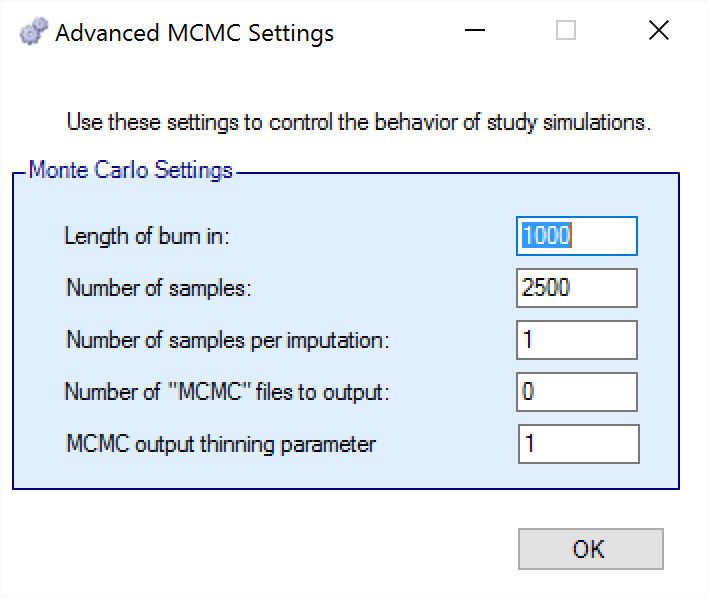
The first two values specify two standard MCMC parameters –
The length of burn-in is the number of the initial iterations whose results are discarded, to allow the MCMC chain to reach its equilibrium distribution.
The number of samples is the number of subsequent iterations whose results are recorded in order to give posterior estimates of the values of interest.
An additional MCMC parameter controls the sampling within sampling when the analysis includes imputation from a longitudinal or predictor model:
- The third parameter controls the number of MCMC samples taken between each imputation of missing data using the longitudinal model, the default value is 1. This parameter only has an effect if Bayesian imputation is being used to impute a significant proportion of your data. This allows the parameter estimates to converge somewhat for each set of imputed data, if the imputed data is only a small percentage of the overall data this is unnecessary. As a rough guide, if it at some early interims > 5% of the data being analyzed will be imputed, a value in the range 2 to 10 is recommended to avoid underestimating the uncertainty. A higher number should be used the greater the proportion of imputed data.
The last two parameters concern the output of the MCMC samples to a log file:
It is possible to have the design engine output the sampled values in the MCMC, in all of the interims of the first N simulated trials of each scenario by specifying the “Number of MCMC files to output” (setting N > 0). The resulting files, ‘mcmcNNNN.csv’, will be in the results directory with all the other results files for that scenario.
It is also possible to reduce the size of these files by specifying a “thinning parameter”.
2.5 FACTS Grid Simulation Settings
A user with access to a computational grid, may choose to run simulations on the grid instead of running them locally. This frees the user’s computer from the computationally intensive task of simulating so that they can continue other work or even shutdown their PC or laptop. In order to run simulations on the grid, it must first be configured, this is normally done via a configuration file supplied with the FACTS installation by the IT group responsible for the FACTS installation.
2.6 Simulation Results
In the center of the simulation tab, the summary simulation results are displayed. There are many columns of results, these are now organized into related groups of sub-windows, which can be displayed by clicking on the “Show other Columns” button.
These windows will show:
All all the columns
Highlights the columns shown on the main tab.
Allocation the columns that report of subject recruitment and allocation
Response the columns that report that estimate treatment response, the SD of the estimate, the estimate of the SD of the response, the true treatment response and the true SD of the response.
Probabilities the proportion of times for each dose that it met the different target criteria (Max, EDx & MED) and the posterior probabilities for each dose that its treatment response is better than control, better than control by the CSD and better than the active comparator.
Stopping Rules the proportion of times the different stopping criteria were met
Model Parameters the columns that report the estimates of the values of the model parameters.
Simulation Results A window that displays the individual simulation results for the currently selected scenario.
Frequentist results If frequentist analysis is enabled, the summary results can be viewed, these are grouped by how missing data has been treated: Last Observation Carried Forward (LOCF), Baseline Observation Carried Forward (BOCF – if baseline has been simulated), Per-Protocol (PP).
2.8 Open in R
If aggregated results files have been created then the Open in R button will start R and load the aggregated ‘.csv’ files.
If there are no aggregated files then the results files of the currently selected scenario are loaded. R can also be opened in this fashion by right clicking on a row in the simulation results table.
When FACTS starts R it writes out an R auto run startup script that loads the csv files into R as separate dataframes.
2.9 Aggregation
Aggregation combines the csv output from multiple scenarios into fewer csv files. The Aggregate… button displays a dialog which allows the user to select what to aggregate.

The default location for the aggregated files is the results directory for the study, but this can be changed.
Aggregation may be performed with or without pivoting on group, or both.
Unpivoted files will have one row for each row in the original files.
In pivoted files each original row will be split into one row per dose.
Where there is a group of columns for each dose, they will be turned into a single column with each value on a new row.
Values in columns that are independent of dose will be repeated on each row.
The default is to aggregate all scenarios, but any combination may be selected.
Pressing “Aggregate” generates the aggregated files.
Each type of csv file is aggregated into a separate csv file whose name begins agg_ or agg_pivot_, so agg_summary.csv will contain the rows from each of the summary.csv files, unpivoted. WeeksNNNNN.csv files are aggregated into a single agg_[pivot_]weeks.csv file. PatientsNNNNN.csv files are aggregated into a single agg_patients.csv file, but they are never pivoted because each row already refers to a single dose. Similarly the various frequentist results at the summary, simulation and weeks level are aggregated (if they’ve been output).
RegionIndex.csv is not aggregated.
Each aggregated file begins with the following extra columns, followed by the columns from the original csv file:
| Column Name | Comments |
|---|---|
| Scenario ID | Index of the scenario |
| Recruitment Profile | A series of columns containing the names of the various profiles used to construct the scenario. Columns that are never used are omitted (e.g. External Subjects Profile if there are no external scenarios) |
| Dropouts Profile | |
| Longitudinal Rates Profile | |
| Dose Response Profile | |
| External Subjects Profile | |
| Agg Timestamp | Date and time when aggregation was performed |
| P(TS) | Proportion of trial success (early success + late success) |
| P(TF) | Proportion of trial futility (early futility + late futility) |
| Sim | Simulation number. Only present in weeks and patients files. |
| Dose | Only present if pivoted |
2.10 Design Report
This button becomes enabled once there are simulation results, it uses an R script and R libraries to generate a MS Word document describing the design.
See the FACTS Design Report User Guide for details of what R packages need installing, how FACTS needs configuring to use the correct R instance, how the generate_report() function is run, and where the resulting report can be found.
3 The summary results columns
3.1 Highlights
These are the columns displayed on the simulations tab after simulations are completed, the can also be displayed in the separate “Highlights” results window.
| Column Title | Number of columns | Description |
|---|---|---|
| Select | 1 | Not an output column, this column contains check box to allow the user to select which scenario to simulate. The ‘Select All’ button causes them all to be checked. |
| Status | 1 | This column reports on the current status of simulations: Completed, Running, No Results, Out of date, Error. It is updated automatically. |
| Scenario | 1 | This column gives the name of the scenario, concatenating together the profile names from the following tabs: ‘Execution > Accrual’, ‘Execution > Dropout Rate’, ’Virtual Subject Response > Composite, This is the same name as used for the results directory |
| Num Sims | 1 | The number of simulations that were run to produce the displayed results. |
| Random Number Seed | 1 | Base random number seed used to perform the simulations. |
| Mean Subj. | 1 | This is the mean (over the simulations) of the number of subjects recruited in this scenario. |
| Ppn Overall Success | 1 | This is the proportion of simulations that stopped for success, either early success or late success (as defined below). |
| Ppn Early Success | 1 | This is the proportion of simulations that stopped early for success (and did not regress to futility in the final analysis – though they might have regressed to ‘inconclusive’). |
| Ppn Late Success | 1 | This is the proportion of simulations that did not stop early but were successful in the final analysis. |
| Ppn Overall Futility | 1 | This is the proportion of simulations that stopped for futility, either early futility or late futility (as defined below). |
| Ppn Late Futility | 1 | This is the proportion of simulations that did not stop early but were futile in the final analysis. |
| Ppn Early Futility | 1 | This is the proportion of simulations that stopped early for futility (and did not regress to success in the final analysis – though they might have regressed to ‘inconclusive’). |
| Ppn S uc->Fut Flipflop | 1 | This is the proportion of simulations that stopped early for success but regressed to futility in the final analysis. |
| Ppn F ut->Suc Flipflop | 1 | This is the proportion of simulations that stopped early for futility but regressed to success in the final analysis. |
| Ppn Inco nclusive | 1 | This is the proportion of simulations that did not stop early and were neither successful nor futile in the final analysis. |
| Early Success Time | 1 | This is the average time to an early decision to stop for success (i.e. the time excluding final follow up) over those simulations that did decide early to stop for success. |
| Mean Trt.: <Dose> | One per arm | This is the mean (over the simulations) of the estimate of the mean response on this dose. |
| Mean Duration | 1 | This is the mean, in weeks (over the simulations) of the duration of the trial from first patient first visit to last patient last visit |
| PPn Arms Drop: < Dose>> | One per arm | This is the number of times (over the simulations) that each arm was dropped. |
| Mean LP Enrolled | 1 | This is the mean, in weeks (over the simulations) of the duration of the trial from first patient first visit to Last Patient First Visit (i.e. the duration of accrual). |
| Ppn Correct Arm | 1 | The proportion of simulations that met the success criteria and selected (by the target QOI specified on the Study > Variant tab) one of the arms marked as “should succeed” on the Virtual Subject Response > Explicitly Defined > Dose Response tab |
| Ppn I ncorrect Arm | 1 | The proportion of simulations that met the success criteria and selected (by the target QOI specified on the Study > Variant tab) one of the arms not marked as “should succeed” on the Virtual Subject Response > Explicitly Defined > Dose Response tab |
| Version | 1 | The FACTS version number at the time the simulations were run. |
3.2 Allocation
| Column Title | Number of columns | Description |
|---|---|---|
| Status | 1 | This column reports on the current status of simulations: Completed, Running, No Results, Out of date, Error. It is updated automatically. |
| Scenario | 1 | This column gives the name of the scenario, concatenating together the profile names from the following tabs: ‘Execution > Accrual’, ‘Execution > Dropout Rate’, ’Virtual Subject Response > Composite, This is the same name as used for the results directory |
| Mean Subj. | 1 | This is the mean (over the simulations) of the number of subjects recruited in this scenario. |
| SD Mean Subj. | 1 | This is the standard deviation across the simulations of the number of subjects recruited. |
| Num Subj 80% | 1 | This is the eightieth percentile across the simulations of the number of subjects recruited into the trial. |
| Mean Alloc.: <Dose> | One per arm | This is the mean (over the simulations) of the number of subjects recruited into each arm in this scenario. |
| SD Alloc.: <Dose> | One per arm | This is the SD (over the simulations) of the number of subjects allocated to each treatment arm. |
3.3 Response
| Column Title | Number of columns | Description |
|---|---|---|
| Status | 1 | This column reports on the current status of simulations: Completed, Running, No Results, Out of date, Error. It is updated automatically. |
| Scenario | 1 | This column gives the name of the scenario, concatenating together the profile names from the following tabs: ‘Execution > Accrual’, ‘Execution > Dropout Rate’, ’Virtual Subject Response > Composite, This is the same name as used for the results directory |
| Mean Trt.: <Dose> | One per arm | This is the mean (over the simulations) of the estimate of the mean response on this dose. |
| SD Trt.: <Dose> | One per arm | This is the standard deviation (over the simulations) of the estimate of the response on this dose. |
| Mean Sigma | 1 | The mean (over the simulations) of the estimate of the SD of the dose response across all the treatment arms (‘sigma’) |
| SD Mean Sigma | 1 | The SD (over the simulations) of the estimate of the SD of the dose response across all the treatment arms. |
| True Mean Resp: <Dose> | One per arm | This is the true mean response from which the simulation data was sampled for each treatment arm. |
| SD True Resp.: <Dose> | One per arm | This is the true SD of the dose response for each treatment arm |
| Mean Longmod Resp: <Dose> <Visit> |
One per arm per visit | These are only calculated and written out if the Time Course Hierarchical or ITP longitudinal models are being used. This is the mean (over the simulations) of the estimate of the mean response for a particular dose at a particular visit, based on the independent estimate of the dose response (omega_d), scaled by the longitudinal model's estimate of the proportion of the final effect observed at the visit. |
| SD Mean Longmod Resp: <Dose> <Visit> |
One per arm per visit | This is the SD ( over the simulations) of the longitudinal model estimate of the response at intermediate visits (see above) |
| Mean Baseline Beta | This is the mean (over the simulations) of the estimate of “Beta” in the Baseline Adjusted dose response model. | |
| SD Baseline Beta | This is the SD (over the simulations) of the estimate of “Beta” in the Baseline Adjusted dose response model. | |
| Mean Baseline | 1 | This is the mean (over the simulations) of the estimate of the mean baseline score. |
| SD Baseline | 1 | This is the SD (over the simulations) of the estimate of the mean baseline score. |
| True Mean Baseline | 1 | This is the true mean from which baseline scores where simulated (including accounting for possible truncation of the baseline scores) |
| True SD Baseline | 1 | This is the true SD of the distribution from which baseline scores were simulated (including accounting for possible truncation of the baseline scores) |
3.4 Observed
| Column Title | Number of columns | Description |
|---|---|---|
| Status | 1 | This column reports on the current status of simulations: Completed, Running, No Results, Out of date, Error. It is updated automatically. |
| Scenario | 1 | This column gives the name of the scenario, concatenating together the profile names from the following tabs: ‘Execution > Accrual’, ‘Execution > Dropout Rate’, ’Virtual Subject Response > Composite, This is the same name as used for the results directory |
| Mean Complete <Dose> | One per arm | This is the mean (over the simulations) of the number of subjects recruited per arm which have had their endpoint observed in this scenario. |
| Mean Complete Info <Dose> | One per arm | This is the mean (over the simulations) of information observed per arm as defined on the Interims tab (Subjects enrolled, Complete Data at Specified Visit, Opportunity to Complete at Specified Visit) in this scenario. |
| Mean Dropouts <Dose> <Visit> |
One per arm per visit | This is the mean (over the simulations) of dropouts per arm per visit in this scenario. |
3.5 Probabilities
| Column Title | Number of columns | Description |
|---|---|---|
| Status | 1 | This column reports on the current status of simulations: Completed, Running, No Results, Out of date, Error. It is updated automatically. |
| Scenario | 1 | This column gives the name of the scenario, concatenating together the profile names from the following tabs: ‘Execution > Accrual’, ‘Execution > Dropout Rate’, ’Virtual Subject Response > Composite, This is the same name as used for the results directory |
| <QOI> <Dose> | One per arm per QOI | For each Posterior Probability and Predictive Probability QOI defined on this endpoint, this is the mean over the simulations of the estimate of the probability of the QOI for each dose. (P-value QOIs are reported in the frequentist results table). For each Target QOI this is the proportion of simulations where this dose was selected at the end of the trial as the dose with the greatest probability of meeting the target condition. The probability that each dose is the target at the end of a simulated trial is its marginal probability (the number of times it was the dose closest to the target in the MCMC sampling of the analysis at the end of the trial). The target of having the Max response on this endpoint, or some fraction of it (EDq) is always identifiable, so the Ppn(target) for these QOIs will sum to 1 across the doses. An MED target is not guaranteed to be identifiable, if no dose meets the CSD criteria in any MCMC sample so all doses have a 0 probability of having a response greater than Control (or AC) by the CSD then no dose is the MED. So the sum of each Ppn(target) QOI across the doses should sum to between 0 and 1 inclusive. Decision QOI’s are not reported here separately, but their component QOIs – the vector of values and target QOI used to select from them are. |
3.6 Model Parameters
| Column Title | Number of columns | Description |
|---|---|---|
| Status | 1 | This column reports on the current status of simulations: Completed, Running, No Results, Out of date, Error. It is updated automatically. |
| Scenario | 1 | This column gives the name of the scenario, concatenating together the profile names from the following tabs: ‘Execution > Accrual’, ‘Execution > Dropout Rate’, ’Virtual Subject Response > Composite, This is the same name as used for the results directory |
| Mean Sigma | 1 | This is the mean (over the simulations) of the posterior estimate of sigma, the SD in the subject’s final responses. |
| SD Mean Sigma | 1 | This is the SD (over the simulations) of the estimate of sigma. |
| Mean Baseline Beta | 1 | This is the mean (over the simulations) of the estimate of the Beta parameter when Baseline Adjustment is Modeled. |
| SD Baseline Beta | 1 | This is the SD (over the simulations) of the estimate of the Beta parameter when Baseline Adjustment is Modeled. |
| BAC Mean | 1 | This is the mean (over the simulations) of the posterior estimate of the mean of the Bayesian Augmented Control (Hierarchical Prior) distribution of mean control responses. |
| SD BAC Mean | 1 | This is the SD (over the simulations) of the posterior estimate of the mean of the Bayesian Augmented Control (Hierarchical Prior) distribution of mean control responses. |
| BAC Tau | 1 | This is the mean (over the simulations) of the posterior estimate of the SD of the Bayesian Augmented Control (Hierarchical Prior) distribution of mean control responses. |
| SD BAC tau | 1 | This is the SD (over the simulations) of the posterior estimate of the SD of the Bayesian Augmented Control (Hierarchical Prior) distribution of mean control responses. |
| BAAC Mean | 1 | This is the mean (over the simulations) of the posterior estimate of the mean of the Bayesian Augmented Active Comparator (Hierarchical Prior) distribution of mean active comparator responses. |
| SD BAAC Mean | 1 | This is the SD (over the simulations) of the posterior estimate of the mean of the Bayesian Augmented Active Comparator (Hierarchical Prior) distribution of mean control responses. |
| BAAC Tau | 1 | This is the mean (over the simulations) of the posterior estimate of the SD of the Bayesian Augmented Active Comparator (Hierarchical Prior) distribution of mean active comparator responses. |
| SD BAAC tau | 1 | This is the SD (over the simulations) of the posterior estimate of the SD of the Bayesian Augmented Active Comparator (Hierarchical Prior) distribution of mean active comparator responses. |
4 Graphs of Simulation Results
To enable swift visualization and analysis of the simulation results, FACTS has a number of pre-defined graphs it can display. Full and detailed simulation results are available in ‘csv’ format files that can be loaded into other analysis tools allowing any aspect of the simulation to be explored. These files are described in Section 16, below.
To view the graphs, select a row of scenario results by clicking on it and then click on the ‘View Graph’ button.
Below we have often shown full screen shots of the graphs in the graph manager, but the graph display supports copying just the graph to the clipboard to facilitate pasting them into documents and presentations. Right clicking on a graph brings up a short menu that allows the image of the graph to be copied to the clipboard or saved in ‘png’ format to a file.
4.1 Per Scenario Graphs
To view the graphs of the results of the simulations of a particular design variant in a particular scenario, select that row of scenario results by clicking on it and then click on the ‘View Graph’ button and select “Show Per Scenario Graphs”.
The graph display supports copying an image of the graph to the clipboard, to facilitate pasting them into documents and presentations. Right clicking on a graph brings up a short menu that allows the image of the graph to be copied to the clipboard or saved in ‘.png’ format to a file.
Many graphs have a number of controls to allow the graph to be tailored, standard graph controls available on most graphs are:
Set Y axis – this displays a dialog boxing allowing the user to fix the minimum and maximum of each of the Y axes and the number of ‘tick’ marks. (Not displayed if the ‘y’ value must lie in the interval 0-1.
Space doses evenly – if the x-value is ‘dose’, then data for each dose can either be spaced equally or proportionate to the doses’ effective dose strength.
If using a 2D treatment arm model then it is possible to display graphs where the different doses (or “arms”) form the x-axis, then there is an option to show the row factors as separate series – otherwise the different combinations are displayed in effective strength order
| Arms shown in effective strength order | Arms shown with row factors as a separate series |
|---|---|
 {width=“3.2150120297462816 {width=“3.2150120297462816  {width=”3.201952099737533i {width=”3.201952099737533i |
in” height=“2.313163823272091in”} n” height=“2.3225984251968503in”} |
4.2 Across Scenario Graphs
To view multiple graphs showing the results of the simulations of possibly all the design variants and all the scenarios click on the ‘View Graph’ button and select “Show Across Scenario Graphs”. This launches a graph display that displays multiple graphs in a trellis plot. You can select the graph type, filter the design variants and filter which scenarios displayed:

4.3 Box and whisker plot conventions
The mean probability is plotted as a large dot.
The median value is plotted as a dashed line.
The 25-75th quantile range is plotted as the “box” portion of each point.
The “whiskers” extend to the largest and smallest values within 1 ½ times the interquartile range from either end of the box.
Points outside the whisker range are considered outliers, and are plotted as small blue dots. Note that it may be difficult to see all of these symbols if they are plotted at the same value.
5 Per Scenario Graphs
5.1 Allocation Box and Whisker Plot

This graph displays a box and whisker plot of the number of subjects recruited into each arm. These plots show:
- The distribution over all simulations of the number of subjects allocated to each arm shown as a box and whisker plot. If the design is not adaptive, the number allocated will be the same in every simulation and the box and whiskers collapse to a single line.
5.2 Response and Subject Allocation
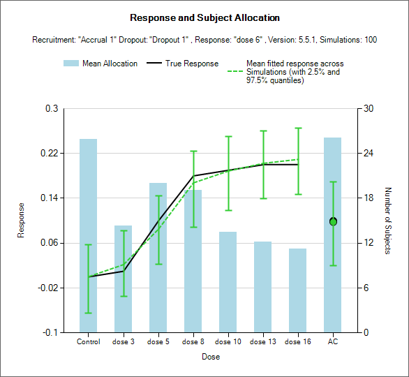
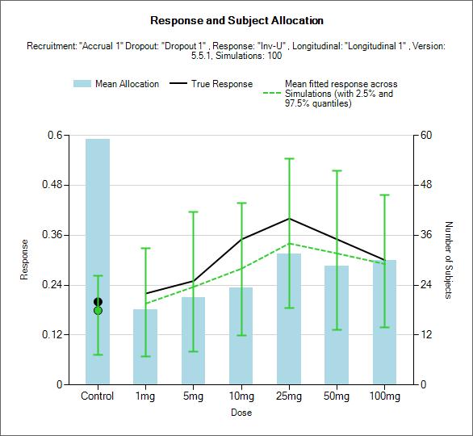
This graph shows for each treatment arm, the mean subject allocation, mean response and the 2.5%-97.5% boundaries of the estimated means over the simulations.
The blue bars show the mean number of subjects allocated.
The black line shows the true mean response being simulated.
The green dashed line shows the mean of the estimated response across the simulations
The green ‘error bars’ show the spread of the central 95% of the estimated mean response across the simulations (if less than 20 simulations have been run it simply shows the full spread).
5.3 Response and Target Selection graphs

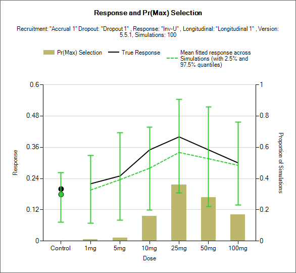
These plots show the true simulated mean response and the mean and 95% spread of the mean fitted mean responses along with bars showing the proportion of simulations the different treatment arms are the selected target arm for each of the “Probability of being target” QOIs, such as Pr(Max), Pr(EDq relative to ..: Quantile=q) and Pr(MED relative to…: Delta=\(\delta\)).
5.4 Per Dose QOIs (Box and Whisker Plots)
This set of graphs show the distribution over the simulations of the posterior probability estimates of quantities of interest for each dose. All the Posterior Probability, Predictive Probability, P-value and Probability of being Target QOIs that have been defined are available for plotting, via a drop down list.
Note that in any one analysis the Probability of being Target will sum to 1 across the doses (and can sum to less than one in the case of the MED target if none of the doses look likely to be better than the CSD), whereas all the other QOIs are assessed individually for each dose.

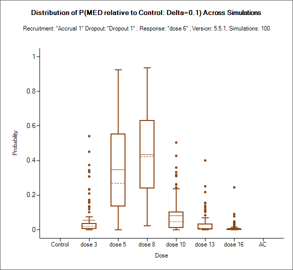


5.5 Target Response by Sample Size Scatter Plot

This graph shows a scatter plot of trial outcomes with the selected Target QOI as the y-axis and total number of subjects recruited as the x-axis. The trials are plotted with a symbol that indicated the final outcome:
A light blue circle indicates a trial that stopped early for success
A dark blue circle indicates a trial that was a late success
A dark red square indicates a trial that was a late futility
A light red square indicates a trial that stopped early for futility
A light pink diamond indicates a trial that stopped early for success but where the final analysis was futility
A dark pink diamond indicates a trial that stopped early for futility but where the final analysis was success
A yellow cross indicates a trial that completed full enrolment but was inconclusive at the end.
These graphs are not particularly useful if there is no early stopping.
If the design does allow early stopping this graph shows
The overall distribution of sample sizes – in particular is stopping evenly distributed from the moment stopping is possible, or is there are large cohort of trials that stop as soon as it is possible?
When and with what mean response trials stop incorrectly, in particular having trials stopping and the decision being reversed suggests stopping is allowed to soon or the criteria is not conservative enough.
5.6 Cumulative Operating Characteristics Plot

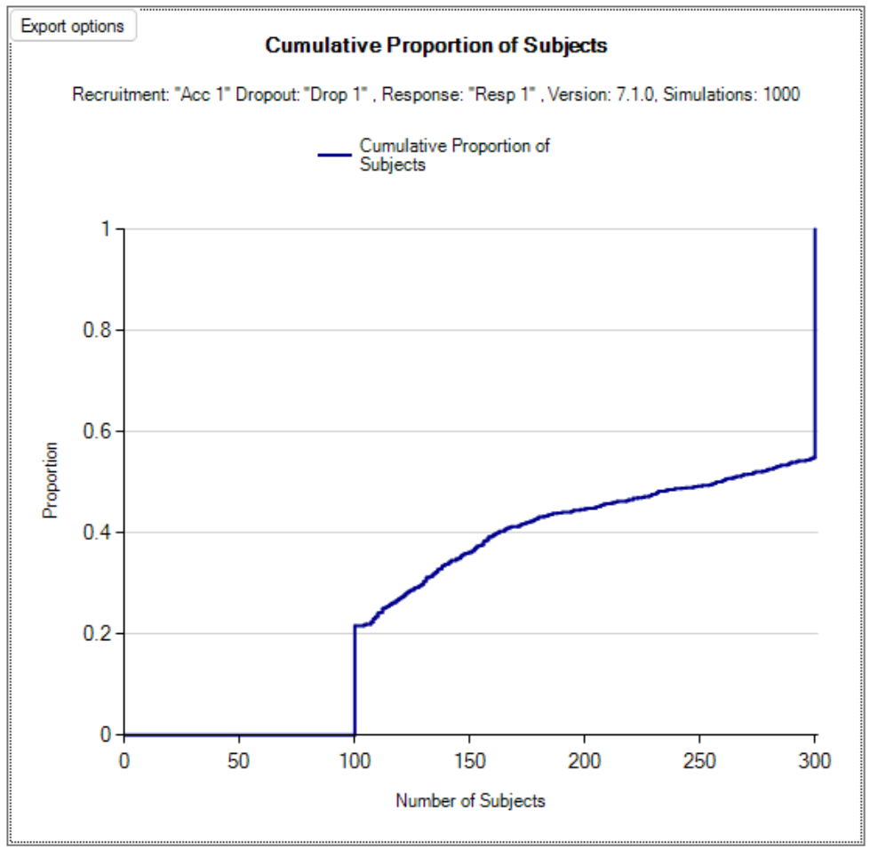
There are two graphs, one that shows the cumulative proportion of durations across all simulations, and the other shows the cumulative proportion of subjects across all simulations.
5.7 Time course for stopping
There are two graphs, one that shows the distribution over time for stopping for futility and one for stopping for success.


These plots show as cumulative curves the proportion of the simulations that stopped at different time points from the start of the trial. The user can select whether time or subject enrollment is used as the x-axis.
5.8 Arm Dropping Graphs
If the design has used arm dropping, the following graphs are available.
5.8.1 Response and Ppn Arms Dropped
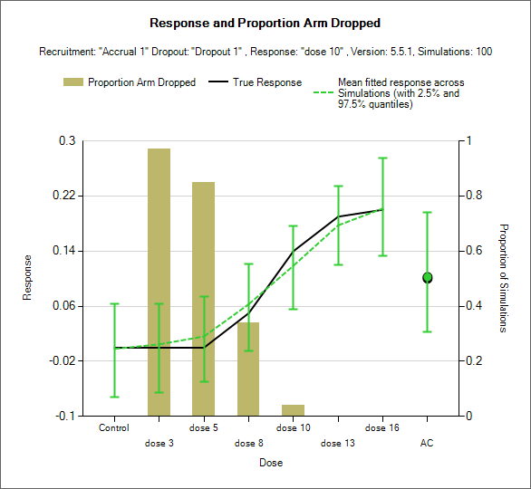

This graph shows the true (simulated) mean response and the average fitted response with 2.5% & 97.5% quantiles.
The histogram bars show for each arm the proportion of simulations for which the arm was dropped.
5.8.2 Time Course for Arm Dropping
This graph shows, for each arm, the cumulative proportion of simulations when it was dropped. The user can select whether time or number of subjects allocated to the arm is used as the x-axis.

5.8.3 Time Course for Arm retention
This graph shows, for each arm, the cumulative proportion of simulations when the arm was retained. The user can select whether time or number of subjects allocated to the arm is used as the x-axis. This is simply the inverse of the arm dropping graph above.
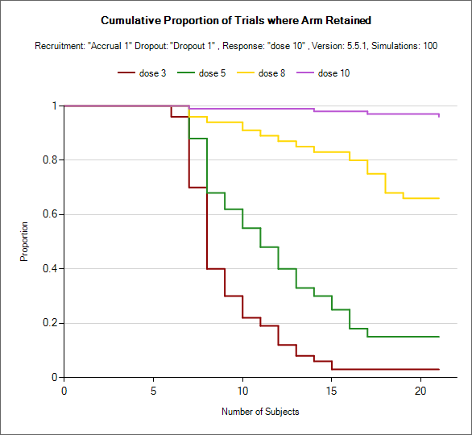
5.8.4 Arm Retention Proportion
This graph shows, for each arm, the simple proportion of simulations where the arm was retained.

5.9 Frequentist
These graphs are available if frequentist analysis is enabled.
5.9.1 Frequentist P(significance)
These graphs are the box and whisker plots of various p-values that are automatically calculated (that is to say they do not need to be defined as QOIs for them to be calculated) for the final analysis. The user can select from Unadjusted, Bonferroni and Dunnett's and LOCF, BOCF (if baseline is simulated) or PP (per-protocol) treatment of missing values.
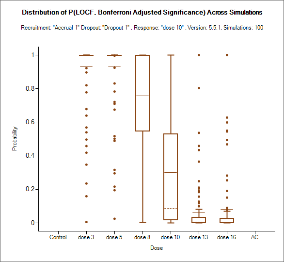
5.9.2 Frequentist: Response and Significance
This graph plots the mean and 2.5-97.5 percentile of the mean across the simulations or the simple frequentist estimate of the response for each arm, along with a histogram plot of the ppn of times the response on each arm was significant. The user can select from Unadjusted, Bonferroni or Dunnett’s and LOCF, BOCF (if baseline is simulated) or PP (per-protocol) treatment of missing values.
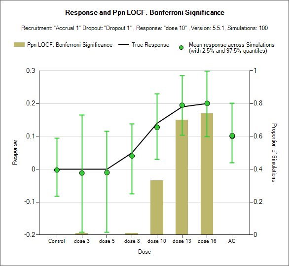
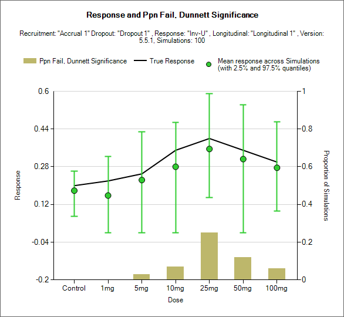
5.10 Per Sim: Response and Subject Alloc
This graph shows the final analysis at the end of individual simulations.
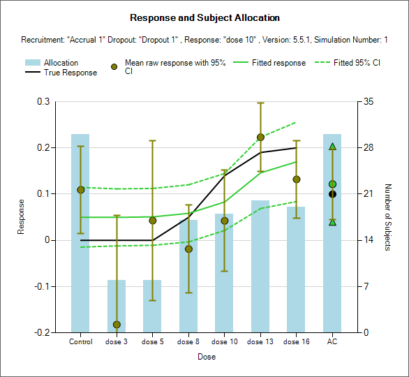
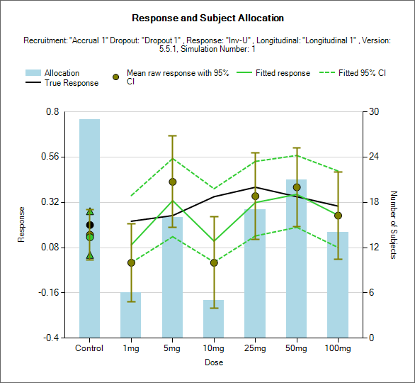
This graph includes a control that allows the user to select which simulation to graph the results from. On each graph
The black line shows the ‘True’ mean response being simulated.
The brown circles and arms show the mean raw data and its 95% CI for each arm.
The green solid line shows the estimate of the mean response.
The green dashed lines show the boundaries of the 95% credible interval for the estimate of the response.
Blue bars showing the number of subjects allocated on each treatment arm.


Control to select the individual simulation results to be displayed
5.11 Per Sim: Posterior Quantities
This graph shows the final analysis at the end of individual simulations, including the distribution of a selected QOI.


This graph includes a control that allows the user to select which simulation to graph the results from. On each graph
The black line shows the ‘True’ mean response being simulated.
The brown circles and arms show the mean raw data and its 95% CI for each arm.
The green solid line shows the estimate of the mean response.
The green dashed lines show the boundaries of the 95% credible interval for the estimate of the response.
Brown bars showing the final value of the selected QOI for each arm at the end of the simulated trial.
The user can select from any of the Posterior Probability, Predictive Probability or Target Probability QOIs to plot.
5.12 Per Interim Response Graphs
This is an identical set of graphs to the Per Sim graphs, the difference is that in addition to a control to select which simulation to graph the results from, there is a control to select which interim within the simulation to graph the results from. These graphs are only available for those simulations for which ‘weeks’ files have been output (by default the first 100).
Note the ‘Interim’ control in both of the below figures.
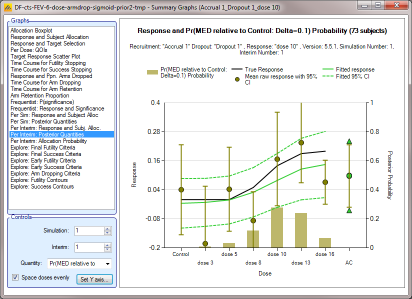
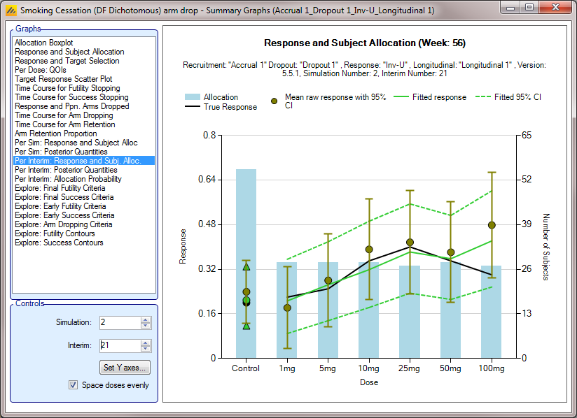
5.13 Explore Success/Futility Criteria

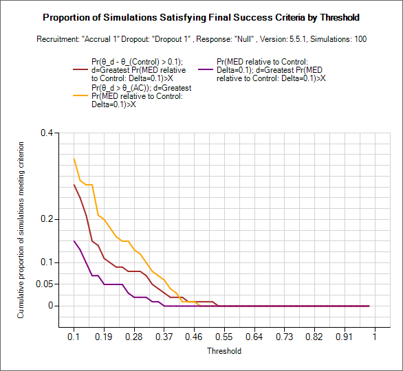

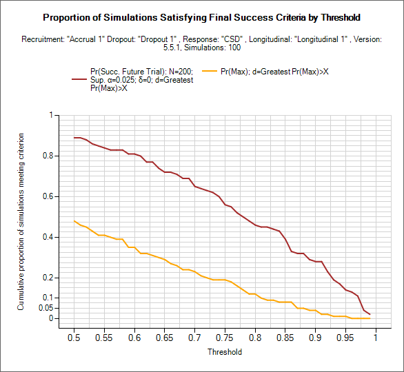
These graphs can be used to explore what proportion of simulated trials of a particular scenario would have been a success/failure at final evaluation. Using the two drop down controls the user can select the target dose to use: e.g. Pr(Max), and set and lower/upper limits to explore for the threshold (setting the range used on the x-axis). The graphs show for all the decision QOIs defined for the selected Target Dose the proportion of simulations that would have met the threshold values.
As in the examples above, the plots will be somewhat jagged if only a small number of simulations have been run. These graphs can be used to select thresholds that can be expected to yield a certain level of type-1 or power, but the user must remember these will only be approximate (depending on the number of simulations) but can be useful to understand the designs sensitivity to the thresholds and to set initial thresholds early on in the design / simulation process that will get close to the desired type-1 error and power from the outset.
5.14 Explore Early Success/Futility Criteria

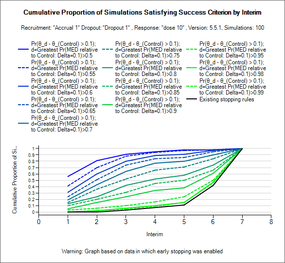
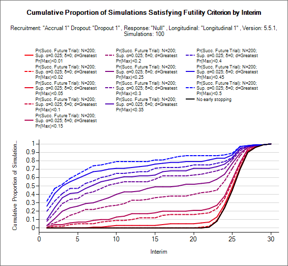

These graphs can be used to explore what proportion of simulated trials of a particular scenario would have stopped early for success/futility. NOTE these graphs require weeks files to have been output, they are also most use where the design has been simulated with interims but no early stopping (unlike the examples above where the shape of the “existing stopping rules” line indicates that early stopping occurred in these simulations).
Using the two drop down controls, the user can select which decision QOI is evaluated and from which interim onwards stopping will be permitted. Lines are then displayed for the proportion of simulations that would have stopped by each interim for a fixed set of thresholds.
Typically these can be used to see at what threshold (and starting at what interim) stopping for success or futility introduces an unacceptably level of ‘incorrect’ early stopping – stopping for futility in successful scenarios and stopping for success in futile scenarios and whether at below/above these levels there may be a useful probability of correct stopping.
5.15 Explore Arm Dropping Criteria

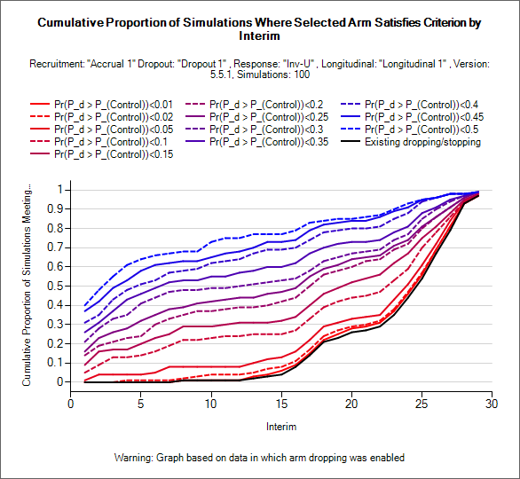
This graph is similar to the Explore Early Success/Futility Criteria graph but for arm dropping criteria. The user has an additional control to select which dose the proportion of trials in which the arm would be dropped is displayed.
5.16 Success/Futility Stopping Contours

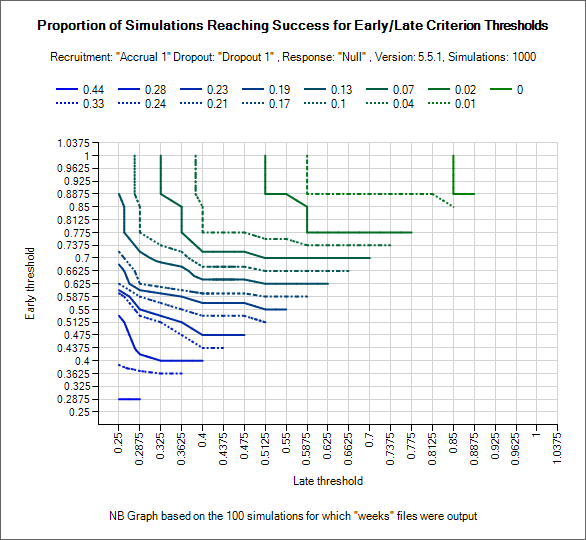
These graphs allow early stopping and final evaluation criteria to be considered jointly. Like the explore early stopping criteria plots, these graphs require weeks files to have been output and will work best if interims were evaluated but no trials actually stopped early.
The user selects the decision QOI to plot, the first interim at which early stopping is allowed, and the upper/lower limit of the threshold to consider.
FACTS will then plot contours where (final evaluation threshold, early stopping threshold) yield the same proportion of trials that are successful/futile. Contours are only plotted where final evaluation threshold < early stopping threshold for success and vice versa for futility. Early stopping criteria should not be less strict than final criteria.
Again the example graphs shown are based on only 100 simulations with weeks files, so any threshold derived will only very approximately yield these success/futility rates.
5.17 MCMC Trace plots
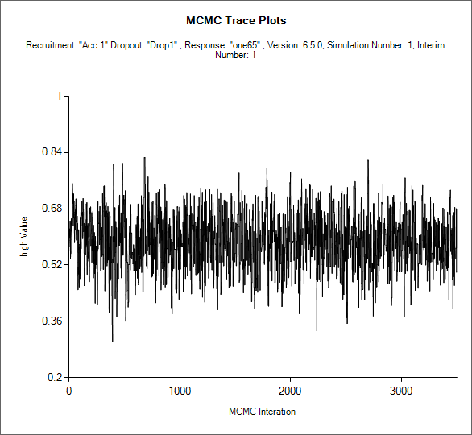
If an MCMC sample file has been output for one or more simulations (the default is to not output MCMC sample files due to their size), then for each of those simulations it is possible to view the MCMC trace of the sampled values for each of the parameters sampled in the MCMC. (See the description of the MCMC file contents below 16.6).
If the design is adaptive, the user can select which interim (“update”) the samples are from, as well as which parameter’s samples to plot.
6 Across Scenario Graphs
6.1 Selected Arms
This graph shows a bar chart for each scenario and variant selected. Each chart shows how often each arm was ‘selected’ by the target QOI specified on the Study > Variants tab. Each bar uses a stacked bar to show the proportion of times that arm was:
“Successful” –the arm was correctly selected (marked as “Should succeed” on the VSR tab) and the trial was successful.
“Should not succeed” – the arm was incorrectly selected (not marked as “Should succeed” on the VSR tab) and the trial was successful.
Unsuccessful – the arm was selected and the trial failed.
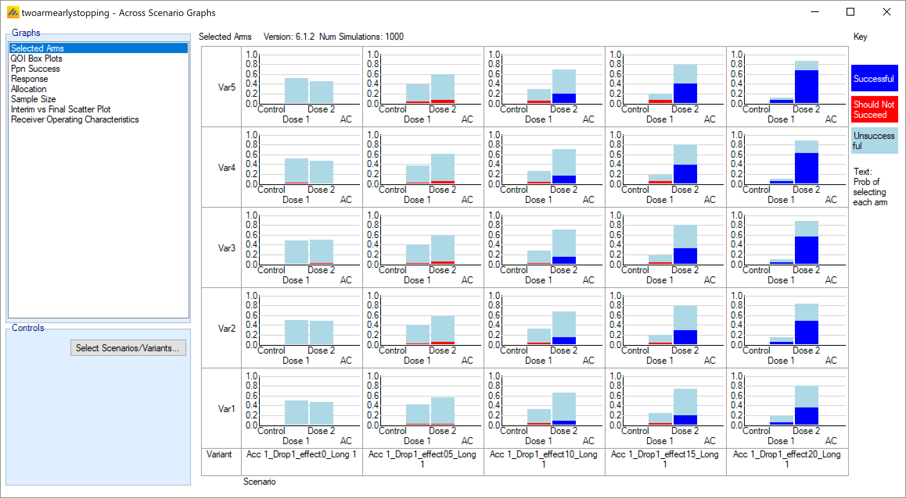
6.2 QOI Box Plots
This graph shows a box and whisker plot for each scenario and variant selected. Each plot shows the distribution of the values of a selected QOI for each arm. There is a drop down control to allow the selection of the QOI to be displayed. Any Posterior probability, Predictive probability, p-value or target QOI can be selected.
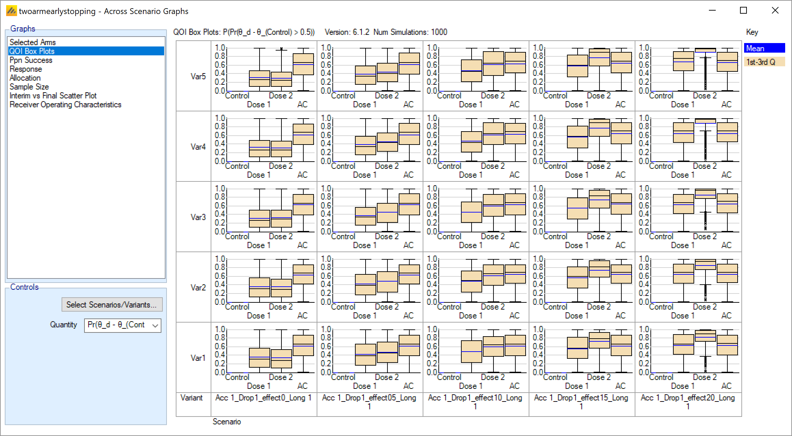
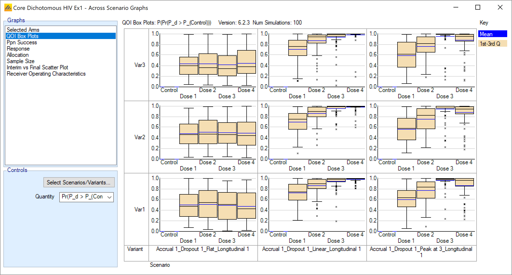
6.3 Ppn Success
This grouped bar chart shows a bar for the proportion of successful simulations for each variant, grouped by scenario.

6.4 Response
This graph shows a dose response plot for each scenario and variant selected. Each plot shows the mean estimate over the simulations and the 95%-ile interval of the mean estimates over the simulations. The graph also shoes the “true response” i.e. the mean response being simulated.

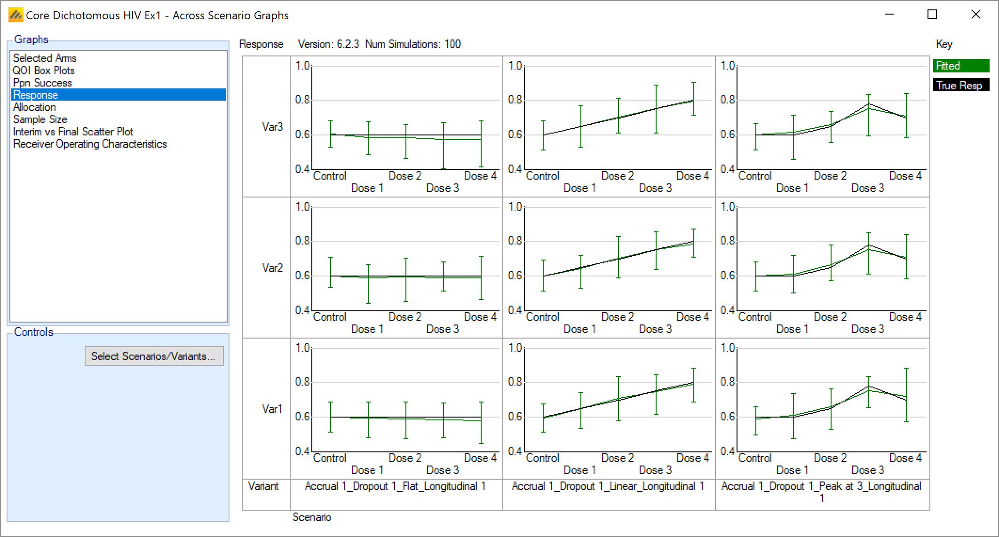
6.5 Allocation
This graph shows a box and whisker plot for each scenario and variant selected. Each plot shows the distribution of the number of subjects allocated to each arm over the simulations.
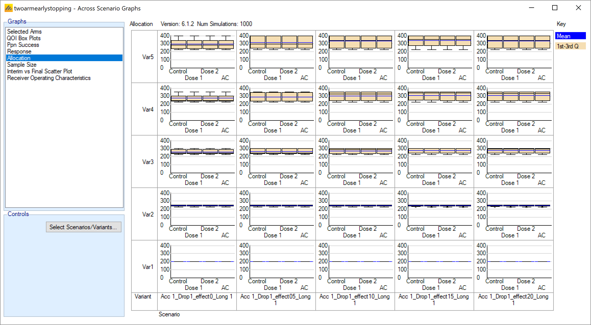
6.6 Sample Size
This graph shows the mean sample size for each scenario at different maximum sample sizes (the different variants).

6.7 Interim vs Final Scatter Plot
This is an interactive plot that shows the outcome of each simulation over all the scenarios of a selected variant.
The x-axis shows the value of the selected decision QOI at the specified interim, and the y-axis shows the final value of a (possibly different) selected decision QOI. As well as selecting a decision QOI for the final decision, the graph can use the actual final decision in the simulations – the value of the QOI used in the first criteria is used for the decision is used for the y-axis.
Note the graph is based just on the values at the selected interim, what might happen at other interims is ignored.
Thresholds can be set to specify early and late success/futility. Each scenario is then coloured to show its outcome – and stacked bar graphs are displayed to show the proportion of each outcome for each scenario. The thresholds can be changed and the graph re-drawn. If the selected QOI uses a p-value the checks for success are that it is “<” than the threshold, (and vice-versa for futility), otherwise the checks for success are that it is “>” the threshold (and vice-versa for futility).
The graph can only display the results for simulations for which cohorts files have been output, and for simulations that reached the specified interim. Thus the graph works best if interims have been specified, but the simulations run without any early stopping enabled – so each simulation has the results for every interim.
With 1,000 simulations per scenario and cohorts files for each simulation, the graph will take several seconds to re-draw. To allow several parameters to be set before redrawing (rather than having to wait for the redraw after each change) the graph is only redrawn after the ‘Redraw’ button is clicked.


6.8 Receiver Operating Characteristics
This graph plots the relative proportion of successful simulations in the scenarios compared to the proportion of successes in one specific scenario. The intended use of this is to yield a “Receiver Operating Characteristics” (ROC) curve. This is done as follows:
Select the decision QoI that is to be used to determine final success/futility. (The graph only supports the simple case where just one is being used).
Select a scenario that represents the ‘Null’ case – where determining success is a type-1 error.
If multiple variants have been simulated, select which variant to plot.
FACTS computes for the null scenario, for a range of decision threshold values, what proportion of the ‘Null’ scenario sims would have been successful (giving the estimated type-1 error rate), these proportions form the x-values for each point. The corresponding threshold values are shown on the x-axis at the top of the graph, the type-1 error rate on the x-axis at the bottom of the graph.
FACTS then computes for each of the other scenarios in turn the proportion of sims that would have been successful and selected a “should succeed” dose so it is necessary for doses to have been specified as “should succeed” on the Virtual Subject Response profiles (giving the estimate of power for that scenario – where ‘power’ also requires correct dose selection), at each of the threshold values, these proportions are then shown on the y-axis of the graph.
Thus for each scenario we can see the estimated power of the design to determine success for a given type-1 error rate in the specified Null scenario.

7 Detailed Simulation Results
After simulation has completed and simulation results have been loaded, the user may examine detailed results for any scenario with simulation data in the table by double-clicking on the row. A separate window (as in Figure 15‑1) displays the individual results for each simulation. This is the contents of the “simulations.csv” file, which is described below. The simulations results are partitioned into the same various results groupings as the summary results. These can be accessed from the “right click” menu, along with opening the results folder, opening the weeks file for a particular simulation and opening the simulated patients file for a particular simulation (where a “weeks” file or a “patients” file has been output).
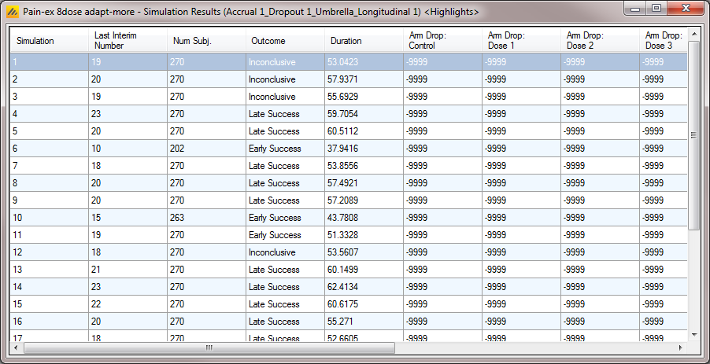
8 Output Files
FACTS stores the results of simulations as ‘.csv’ files under a Results folder. For each row in the simulations table, there is a folder named by the profiles that make up the scenario, which contains the corresponding ‘.csv’ files.

These files can be opened using Microsoft Excel, but versions of Excel before 2007 are restricted to 256 columns, which is too few to view some files in their entirety. The ‘Calc’ application in ‘OpenOffice’ will show all the columns (and will open two files that have the same name at the same time!). Because Excel takes out a file lock on any file it has open, while a file is open in Excel it cannot be deleted or modified by another application. The most common cause for an error to be reported when simulating trials in FACTS is because the user has one of the previous results files is still open in Excel.
In the scenario directory there are the following types of results file:
Summary.csv Contains a single row of data that summarizes the simulation results. This is the source of the shown on the simulations tab.
Summary_freq_locf.csv
Summary_freq_fail.csv
Summary_freq_ignore.csv Contains a single row of data that that summarizes the frequentist analysis of the simulations. A file is output for each of the different methods for dealing with missing data that are applicable: BOCF if the baseline score is being simulated, LOCF and “ignore” (referred to as PP (Per-Protocol) in the GUI).
Simulations.csv Contains one row per simulation describing the final state of each simulation for every trial simulated.
Simulations_freq.csv Contains one row per simulation describing the frequentist analysis of the final state of each simulation for every trial simulated.
PatientsNNNNN.csv Contains one row per patient in a simulation, where NNNNN is the number of the simulation. By default this file is written out only for the first simulation, but this can be changed on the simulations tab.
WeeksNNNNN.csv contains one row for each cohort during a simulation where NNN is the number of the simulation. By default this file is written only for the first 100 simulations, but this can be changed via the simulation tab. The values in the last row of the cohorts file will be the same as the final values for that simulation in the simulations file.
weeks_freq_bocf_NNNNN.csv,
weeks_freq_locf_NNNN.csv,
weeks_freq_ignore_NNNNN.csv,
Contains one row for each interim during a simulation where NNNNN is the number of the simulation. A file is output for each simulation for which a frequentist “weeks file” is to be output, and for each of the different methods for dealing with missing data that are applicable.
8.1 Contents of summary.csv
The first line is a header line, starting with a ‘#’, containing the column headings.
| Column Title | Number of columns | Description |
|---|---|---|
| Project | 1 | The name of the facts file |
| Scenario | 1 | The name of the scenario |
| Timestamp | 1 | The time the simulations were run |
| Version | 1 | The version of FACTS that was used to run the simulations |
| NSim | 1 | The number of simulation run. |
| Random Number Seed | 1 | The random number seed |
| No. Subj | 1 | The mean, over the simulations, of the total number of subjects recruited in the trial. |
| SE Subj. | 1 | The standard error of the total number of subjects recruited into the trials. |
| No.Subj 80%ile | 1 | The 80th percentile, over the simulations, of the total number of subjects recruited in the trial. |
| Ppn Overall Success | 1 | The proportion of simulations that were successful (P(ES) + P(LS)) |
| Ppn Overall Futility | 1 | The proportion of simulations that were futile (P(EF) + P(LF)) |
| P(ES) |
|
The proportion of simulations that stopped early for success. |
| P(LS) | 1 | The proportion of simulations that did not stop early, and were successful on final evaluation. |
| P(LF) | 1 | The proportion of simulations that did not stop early, and were futile on final evaluation. |
| P(EF) | 1 | The proportion of simulations that stopped early for futility. |
| SFFF | 1 | The proportion of simulations that stopped early for success, but at final analysis were futile (Success-Futility ‘flip-flops’). |
| FSFF | 1 | The proportion of simulations that stopped early for futility, but at final analysis were successful (Futility- Success ‘flip-flops’). |
| Undec. | 1 | The proportion of simulations that did not stop early, and met neither the success or futility final evaluation criteria and hence are counted as ‘undecided’. |
| Unused | 3 | Three unused columns for other outcome types. |
| Early Success Time | 1 | This is the mean early decision time (over the simulations stopped early for success), it is the time from the start of the trial to the interim where early success was declared. It does not include the subsequent follow up time. |
| Mean Alloc <dose> | D | The mean (over the simulations) of the number of subjects allocated to each treatment arm. |
| SE Alloc <dose> | D | The standard error (over the simulations) of the number of subjects allocated to each treatment arm. |
| Mean Resp <dose> | D | The mean of the estimates of response of each treatment arm. |
| SE Resp <dose> | D | The standard error, over the simulations, of the estimate of response of each treatment arm. |
| Mean Sigma | 1 | The mean of the estimate of sigma – the average standard deviation of the dose response |
| SE Mean Sigma | 1 | The standard error of the estimate of sigma – the average standard deviation of the dose response |
| True Mean resp <dose> | D | The true response for each treatment arm used when sampling the simulated subject responses. |
| True SD resp <dose> | D | The true SD of the response for each treatment arm of the simulated subject responses |
| Mean Longmod Resp: <Dose> <Visit> | D*V | These are only calculated and written out if the Time Course Hierarchical or ITP longitudinal models are being used. This is the mean (over the simulations) of the estimate of the mean response for a particular dose at a particular visit. |
| SE Mean Longmod Resp: <Dose> <Visit> | D*V | This is the standard error (over the simulations) of the longitudinal model estimate of the response at intermediate visits (see above) |
| Mean Complete <Dose> | D | The mean number of completers for each treatment arm |
| Mean Complete Info <Dose> | D | The mean number of complete information (as specified by the interim information type on the Interims tab) for each treatment arm |
| No .Dropouts <Dose> <Visit> | D*V | The mean number of dropouts per treatment arm per visit |
| Mean Beta | 1 | The mean of the estimates of the coefficient of baseline adjustment |
| SE beta | 1 | The standard error of the estimates of the coefficient of baseline adjustment |
| Mean Baseline | 1 | The mean of the estimate of the mean of the baseline score |
| SE Mean Baseline | 1 | The standard error of the estimate of the mean of the baseline score |
| SD Baseline | 1 | The mean of the estimate of the SD of the baseline score |
| SE SD Baseline | 1 | The standard error of the estimate of the SD of the baseline score |
| True Mean Baseline | 1 | The true mean of the baseline score (accounting for possible truncation) |
| True SD Baseline | 1 | The true SD of the baseline score (accounting for possible truncation) |
| BAC Mean | 1 | If a hierarchical prior for Control is being used this is the mean (over the simulations) of the posterior estimate of the mean of the Bayesian Augmented Control (Hierarchical Prior) distribution of mean control responses. |
| SE of BAC Mean | 1 | If a hierarchical prior for Control is being used this is the standard error (over the simulations) of the posterior estimate of the mean of the Bayesian Augmented Control (Hierarchical Prior) distribution of mean control responses. |
| BAC Tau | 1 | If a hierarchical prior for Control is being used this is the mean (over the simulations) of the posterior estimate of the SD of the Bayesian Augmented Control (Hierarchical Prior) distribution of mean control responses. |
| SE of BAC Tau | 1 | If a hierarchical prior for Control is being used this is the standard error (over the simulations) of the posterior estimate of the SD of the Bayesian Augmented Control (Hierarchical Prior) distribution of mean control responses. |
| BAAC Mean | 1 | If a hierarchical prior for Active Comparator is being used this is the mean (over the simulations) of the posterior estimate of the mean of the Bayesian Augmented Active Comparator (Hierarchical Prior) distribution of mean active comparator responses. |
| SE of BAAC Mean | 1 | If a hierarchical prior for Active Comparator is being used this is the standard error (over the simulations) of the posterior estimate of the mean of the Bayesian Augmented Active Comparator (Hierarchical Prior) distribution of mean control responses. |
| BAAC Tau | 1 | If a hierarchical prior for Active Comparator is being used this is the mean (over the simulations) of the posterior estimate of the SD of the Bayesian Augmented Active Comparator (Hierarchical Prior) distribution of mean active comparator responses. |
| SE of BAAC Tau | 1 | If a hierarchical prior for Active Comparator is being used this is the standard error (over the simulations) of the posterior estimate of the SD of the Bayesian Augmented Active Comparator (Hierarchical Prior) distribution of mean active comparator responses. |
| Mean Duration | 1 | The mean, over the simulations, of the overall duration of the trials, from first person first visit, to last person last visit. |
| Ppn Arms Dropped <dose> | D | The proportion of the simulations in which each arm was dropped. These will be zero if arm dropping is not selected as the means of adaptive allocation. |
| Mean LPFV time | 1 | The mean, over the simulations, of the accrual period of the trials, from first person first visit, to last person first visit (LPFV). |
| Ppn Correct Arm | 1 | The proportion of the simulations where the correct arm has been selected, where an arm is deemed “correct” based on whether it was marked as “Should Succeed” for the relevant scenario on the VSR tab. |
| Ppn Incorrect Arm | 1 | The proportion of the simulations where the incorrect correct arm has been selected, where an arm is deemed “incorrect” based on whether it wasn’t marked as “Should Succeed” for the relevant scenario on the VSR tab. |
| QOI Columns |
8.1.1 QOI Columns
The QOI columns depend on the QOIs that have been defined for this design. The columns in the following order:
Posterior Probabilities The summary file contains the mean (over the simulations) of the posterior probability for each dose.
Predictive Probabilities The summary file contains the mean (over the simulations) of the predictive probability for each dose.
P-Values The summary file contains the mean (over the simulations) of the p-value for each dose.
Target Probabilities The summary file contains the proportion of times (over the simulations) each dose had the greatest probability of being the target.
Decision QOIs The summary file contains the mean (over the simulations) of the final value of the decision QOI at the target.
8.2 Contents of Summary_freq_<missing>.csv
There is a frequentist summary file for each type of treatment of missing values.
The first line is a header line, starting with a ‘#’, and containing
The FACTS GUI version number
The name of the FACTS file
The name of the scenario
The time stamp of the start of the simulation
The second line is a header line, starting with a ‘#’, containing the column headings.
| Column Title | Number of columns | Description |
|---|---|---|
| Mean Theta <dose> | D | The mean response per dose. |
| SE Theta <dose> | D | The standard error of the response per dose |
| Mean Beta (b aseline) | 1 | The mean of the estimate of the baseline coefficient. |
| SE Mean Beta (b aseline) | 1 | The standard error of the estimate of the baseline coefficient |
| Ppn Signif | 1 | The proportion of simulations where at least one of the unadjusted p-values is less than the user specified one-sided alpha. |
| Ppn Signif <dose> | D | For each treatment arm, the proportion of simulations where the unadjusted p-value is less than the user specified one-sided alpha. The marginal probability of significance per dose (using unadjusted p-values. |
| Bias <dose> | D | The difference between the estimated mean response and the true (simulated) mean response per dose |
| Coverage <dose> | D | The proportion of simulations where the unadjusted confidence interval for the response contains the true mean response used to simulate subject responses. |
| Ppn Signif Dunnett | 1 | The proportion of simulations where at least one of the Dunnett adjusted p-values is less than the user specified one-sided alpha. |
| Ppn Signif Dunnett <dose> | D | For each treatment arm, the proportion of simulations where the Dunnett adjusted p-value is less than the user specified one-sided alpha. |
| Coverage Dunnett <dose> | D | The proportion of simulations where the Dunnett adjusted confidence interval contains the true mean response used to simulate subjects responses. |
| Ppn Signif Bonf | 1 | The proportion of simulations where at least one of the Bonferroni adjusted p-values is less than the user specified one-sided alpha. |
| Ppn Signif Bonf <dose> | D | For each treatment arm, the proportion of simulations where the Bonferroni adjusted p-value is less than the user specified one-sided alpha. |
| Coverage Bonf <dose> | D | The proportion of simulations where the Bonferroni adjusted confidence interval contains the true mean response used to simulate subjects responses. |
| Ppn Signif Trend | 1 | The proportion of simulations where the trend test p-value is less than the user specified one-sided alpha. |
8.3 Contents of simulations.csv and weeksNNNNN.csv
The simulations.csv file holds the FACTS summary of the final analysis for each simulation (one per row).
The weeksNNNNN.csv file holds the FACTS summary of every analysis for the NNNNNth simulation. It contains a row for each interim in the trial and a roe for the final analysis (Interim number 999). The final analysis occurs after all the planned data is collected.
If the trial does not stop early this will be after all full follow-up for all subjects,
if the trial does stop early this will be either
an analysis after full follow-up of the subjects recruited up to the point of the interim when the stopping decision was taken (If the “continue follow-up” option has been selected by the user on the Interims tab)
or it will perform a repeat the analysis using the data available at the interim when the stopping decision was taken – the results will vary from those of the interim within MCMC sampling error. (This “unnecessary” analysis is included to keep the content of the weeks files consistent and hence simplify the post processing of “weeks” files).
The first line is a header line, starting with a ‘#’, and containing
The FACTS GUI version number
The name of the FACTS file
The name of the scenario
The time stamp of the start of the simulation
The second line is a header line, starting with a ‘#’, containing the column headings.
Most of the columns are common to the two file types, but the weeks file does not contain columns for the ‘final’ values of the evaluation criteria.
| Column Title | Nu mber of col umns | In s imula tions file | In w ee ks fi le | Description |
|---|---|---|---|---|
| # Weeks (Duration) | 1 | ✔ | The week of the analysis | |
| #Sim | 1 | ✔ | The number of the simulation. | |
| Random Number Seed | 1 | ✔ | ✔ | Base random number seed. |
| LastInterim | 1 | ✔ | The index of the last interim performed the index of the interim immediately before the final interim (index ‘999’). Note this is not necessarily the interim when the trial stopped if the design includes follow-up after stopping. | |
| #Subjects | 1 | ✔ | ✔ | The number of subjects recruited in the simulation. |
| Outcome | 1 | ✔ | ✔ | A flag categorizing final study outcome:
|
| Early Success Time | 1 | ✔ | ✔ | This is the time to the early success decision (-9999 if there was no early success decision). The from the start of the trial to the interim where the early success conditions were first met. It does not include the subsequent follow up time. |
| Alloc <dose> | D | ✔ | ✔ | The number of subjects allocated to each arm. |
| Pr(Alloc) <dose> | D | ✔ | ✔ | The probability of allocation to the different arms following the interim. |
| Mean resp <dose> | D | ✔ | ✔ | The estimated response of each treatment arm. |
| SD resp <dose> | D | ✔ | ✔ | The standard deviation of the estimate of response of each treatment arm. |
| True Mean resp <dose> | D | ✔ | ✔ | The true mean response of each treatment arm for this simulation. |
| True SD resp <dose> | D | ✔ | ✔ | The true SD of the response of each treatment arm for this simulation |
| Sigma | 1 | ✔ | ✔ | The pooled estimate of the SD of the response across all the treatment arms |
| SD_Sigma | 1 | ✔ | ✔ | The SD of the pooled estimate of the SD of the response across all the treatment arms |
| Beta | 1 | ✔ | ✔ | The estimate of ‘Beta’ the baseline adjustment coefficient, if baseline adjustment is being used. |
| SD_Beta | 1 | ✔ | ✔ | The SD of the estimate of ‘Beta’ the baseline adjustment coefficient. |
| Mean Baseline | 1 | ✔ | ✔ | The estimate of the mean baseline score. |
| SE Mean Baseline | 1 | ✔ | ✔ | The standard error of the estimate of the mean baseline score. |
| SD Baseline | 1 | ✔ | ✔ | The estimate of the SD of the baseline score. |
| True Mean Baseline | 1 | ✔ | ✔ | The true mean of the simulated baseline score |
| True SD Baseline | 1 | ✔ | ✔ | The true SD of the simulated baseline score |
| Mean Raw Response <dose> | D | ✔ | ✔ | The observed mean response on each treatment arm (unadjusted by any modeling). |
| SE Mean Raw Response | D | ✔ | ✔ | The SE of the estimate of the mean raw response on each dose. |
| Complete <dose> | D | ✔ | ✔ | The number of completed subjects on each treatment arm at the time of the analysis. |
| Complete Information <dose> | D | ✔ | ✔ | The number of subject who count as complete for the purposes of timing interims – whether complete or opportunity to complete and at which visit is as defined on the Interims tab. If interims are by enrolment then CompleteInformation is the number of subjects that have completed – final endpoint data is available. |
| #Dropouts <dose> <visit> | D * V | ✔ | ✔ | The number of subjects dropped out on each treatment arm and each visit. |
| DR Param <param> | 10 | ✔ | ✔ | The estimate of the mean value of each of the response model parameters. The response models require up to 10 parameters, most less. The model parameters are labeled α1, α2, .. the subscripts corresponding to the index “<param>”. |
| Sd DR Param <param> | 4 | ✔ | ✔ | The standard deviation of the estimate of the mean value of the corresponding response model parameter. |
| Longmod_ <model> < parameter> <visit> | LM * LMP * V | ✔ | ✔ | The estimate of the mean value of each of the longitudinal model parameters. The number of models depends on the number of “model instances” the user has specified. For linear regression the parameters reported are:
For time course hierarchical the parameters reported are:
For ITP the parameters are:
For LOCF & Kernel Density there are no estimated parameters. |
| Longmod Resp: <Dose> <Visit> | D * V | ✔ | ✔ | These are only calculated and written out if the Time Course Hierarchical or ITP longitudinal models are being used. This is the mean response for a particular dose at a particular visit. |
| BAC Mean | 1 | ✔ | ✔ | This is the posterior estimate of the mean of the Bayesian Augmented Control (Hierarchical Prior) distribution of mean control responses. |
| BAC Mean SD | 1 | ✔ | ✔ | This is the SD of the posterior estimate of the mean of the Bayesian Augmented Control (Hierarchical Prior) distribution of mean control responses. |
| BAC Tau | 1 | ✔ | ✔ | This is the posterior estimate of the SD of the Bayesian Augmented Control (Hierarchical Prior) distribution of mean control responses. |
| BAC Tau SD | 1 | ✔ | ✔ | This is the SD of the posterior estimate of the SD of the Bayesian Augmented Control (Hierarchical Prior) distribution of mean control responses. |
| BAAC Mean | 1 | ✔ | ✔ | This is the posterior estimate of the mean of the Bayesian Augmented Active Comparator (Hierarchical Prior) distribution of mean active comparator responses. |
| BAAC Mean SD | 1 | ✔ | ✔ | This is the SD of the posterior estimate of the mean of the Bayesian Augmented Active Comparator (Hierarchical Prior) distribution of mean comparator responses. |
| BAAC Tau | 1 | ✔ | ✔ | This is the posterior estimate of the SD of the Bayesian Augmented Active Comparator (Hierarchical Prior) distribution of mean active comparator responses. |
| BAAC Tau SD | 1 | ✔ | ✔ | This is the SD of the posterior estimate of the SD of the Bayesian Augmented Active Comparator (Hierarchical Prior) distribution of mean active comparator responses. |
| Duration | 1 | ✔ | ✔ | The time in weeks to the analysis shown. |
| Arm Drop Time <dose> | D | ✔ | ✔ | For each treatment arm, the time in weeks when it was decided to drop the arm. |
| LPFV | 1 | ✔ | ✔ | The time in weeks to the last patient first visit. |
| QOI Columns |
8.3.1 QOI Columns
The QOI columns depend on the QOIs that have been defined for this design. The columns are grouped in the following order:
Posterior Probabilities The posterior probability for each QOI for each dose.
Predictive Probabilities The predictive probability for each QOI for each dose.
P-Values The p-value for each QOI for each dose.
Target Probabilities The probability of being the target for each QOI for each dose.
Decision QOIs The value of the decision QOI at the target.
Success
Futile A flag for each QOI decision criteria indicating if the decision QOI was evaluated and compared to a threshold at the interim (weeks file) or final analysis (simulation file). The flag value is -1 if the decision QOI was not evaluated, 0 if it did not meet the threshold and 1 if it did.
Success / Futile Combined Flags indicating if the interim or final analysis determined success or futility taking all the factors defined for Success/Futility into account: 0 if the conditions were not met, 1 it the conditions were met. If success and futility conditions have been defined that are not mutually exclusive and both sets of combined conditions are met, FACTS will pick one of the outcomes as met but not the other. In order to discourage defining Success and Futility rules that can both be true FACTS does not guarantee which outcome will be selected.
8.4 Contents of Simulations_freq_<missing>.csv, Weeks_freq_<missing>.csv
These file contain the frequentist results after an interim analysis (weeks file) or final analysis (simulations file), apart for the first column, the columns are the same in the two types of file, and the same across the different methods for treating missing data.
| Column Title | Number of columns | Description |
|---|---|---|
| # Trial | 1 | The number of the simulation. (simulations_freq_...csv only) |
| #Weeks | 1 | The week of the interim (weeks_freq_...csv only) |
| Theta <dose> | D | Unadjusted estimate of response per treatment arm |
| Theta SD <dose> | D | The SD of the estimate of response per treatment arm |
| Trt Effect <dose> | D | The relative size of the treatment effect compared to control per arm (treatment effect for control is always 0). The direction of the comparison takes into account whether a response represents a subject’s condition improving or worsening, so that a positive treatment effect shows the response on the dose is better than on control. |
| t-Stat <dose> | D | The t-test statistic per treatment arm (for control this is always 0) |
| p-Value <dose> | D | The unadjusted t-test p-value per arm (for control this is always 0) |
| lower CI <dose> | D | The unadjusted lower bound of the alpha confidence interval of the estimated treatment effect per treatment arm (for control this is always 0). |
| upper CI <dose> | D | The unadjusted upper bound of the alpha confidence interval of the estimated treatment effect per treatment arm (for control this is always 0). |
| Min p-Value | 1 | The smallest of the t-test p-values |
| p-Value Dunnett <dose> | D | The Dunnett adjusted t-test p-value per arm (for control this is always 0). |
| lower CI Dunnett <dose> | D | The Dunnett adjusted lower bound of the alpha confidence interval of the estimated treatment effect (for control this is always 0). |
| upper CI Dunnett <dose> | D | The Dunnett adjusted upper bound of the alpha confidence interval of the estimated treatment effect (for control this is always 0). |
| Min p-Value Dunnett | 1 | The smallest of the Dunnett adjusted p-values. |
| p-Value Bonf <dose> | D | The Bonferroni adjusted t-test p-value per arm. |
| lower-CI Bonf <dose> | D | The Bonferroni adjusted lower bound of the alpha confidence interval of the estimated treatment effect (for control this is always 0). |
| upper-CI Bonf <dose> | D | The Bonferroni adjusted upper bound of the alpha confidence interval of the estimated treatment effect (for control this is always 0). |
| Min p-Value Bonf | 1 | The smallest of the Bonferroni adjusted t-test value per arm. |
| t-Stat trend | 1 | The t statistic from the trend test. |
| p-Value trend | 1 | The p-value from the trend test. |
8.5 Contents of PatientsNNNNN.csv
| Column Title | Number of columns | Description |
|---|---|---|
| #Subject | 1 | The subject id number, starting at 1. |
| Region | 1 | Which region the subject was recruited in |
| Date | 1 | The date, in weeks from the start of the trial, of the subject’s baseline visit and randomization. |
| Dose | 1 | The index number (1, …) of the treatment arm the subject belongs to. |
| LastVisit# | The index of the last visit for which the subjects data was collected, if the subject did not complete this could be because the subject dropped-out, the subject’s treatment arm was dropped (and there was no follow-up) or the study stopped early (and there was no follow-up). | |
| Baseline | 1 | Subject baseline if simulated |
| Visit <visit> | V | Subjects response at each visit |
8.6 Contents of MCMCNNNNN.csv
The MCMC file if requested for output by the user, contains all the MCMC samples for the fitted parameters in the design. There is one row per sample (including the burnin) and the samples from all the analyses in the simulation are included. The first two columns are the analysis index and the sample (within analysis) index. The remaining columns are the parameters whose sample values are being reported, the number and constituents of these columns are highly variable depending on design of the statistical analysis.
| Column Title | Number of columns | Description |
|---|---|---|
| Analysis | 1 | The index of the analysis (interim) in the simulation |
| Sample | 1 | The index of the sample within the analysis |
| Theta <dose> | D | The estimate of the mean response for each dose, based on the dose response model fitted |
| Sigma | 1 | The estimate of the SD of the endpoint |
| Beta | 1 | If baseline is included in the simulated data and using the “Baseline Adjusted Model”, this is the value of “Beta”, the baseline coefficient. |
| A <1-8> / Tau | P | If the dose response model estimates parameters then the samples of these are listed next. The number and name of the parameters will vary depending on the model being fitted. Check the Design > Dose Response tab for a listing of the parameters. |
| Longmod <model> <param> <visit> | L * P * V | If the analysis includes longitudinal modelling then the samples of the parameters of the longitudinal models are output. The number of models depends on the number of different longitudinal fits the user has specified (one over all arms, one for control and one for all treatment arms, model all arms separately, etc.), the number of parameters the model has, and if these are fitted per visit (which depends on the model being fitted), then the number of visits. |